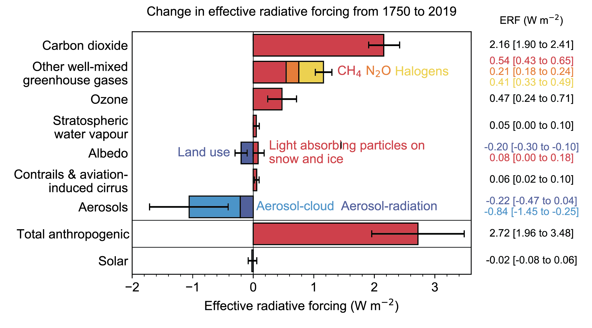
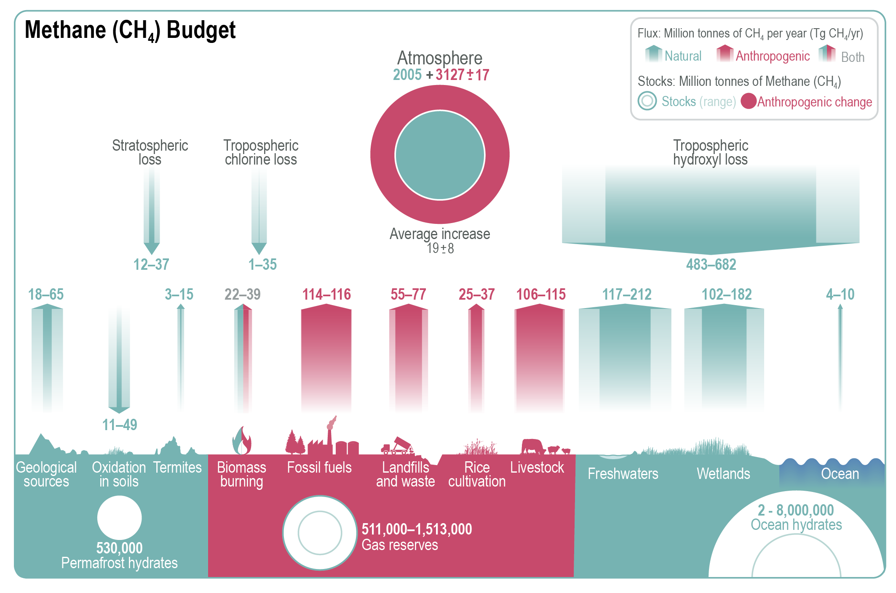
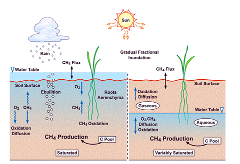
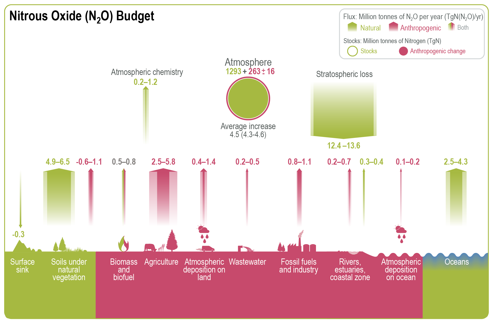
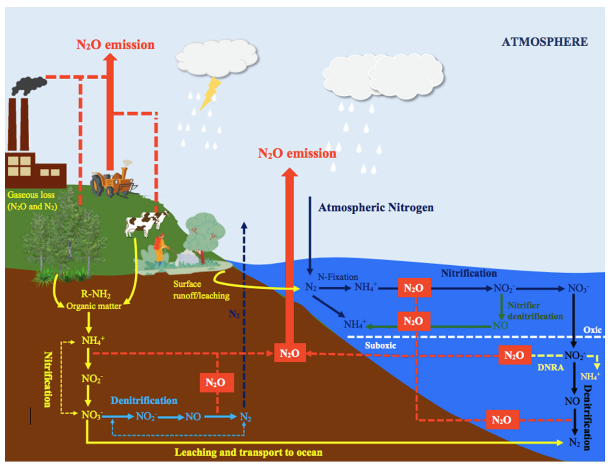
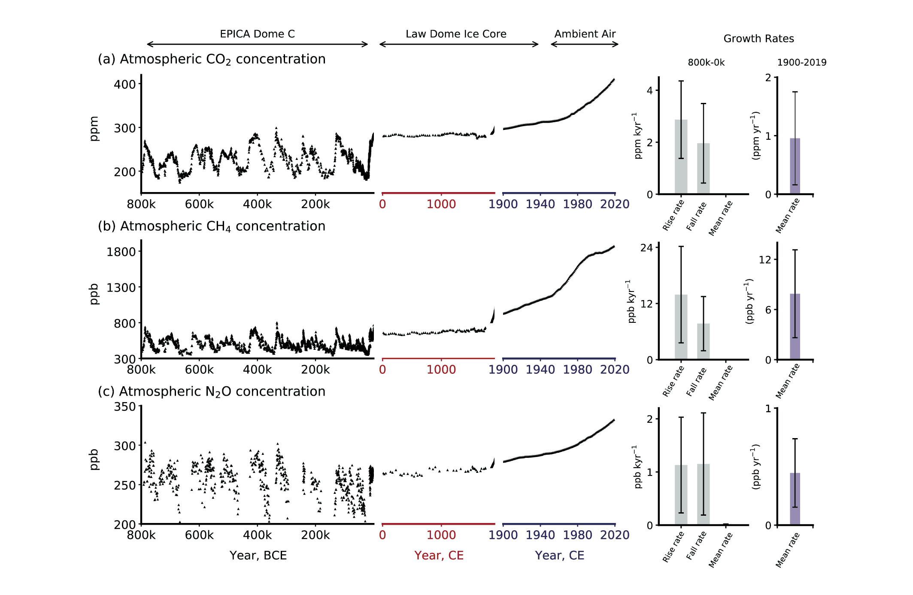
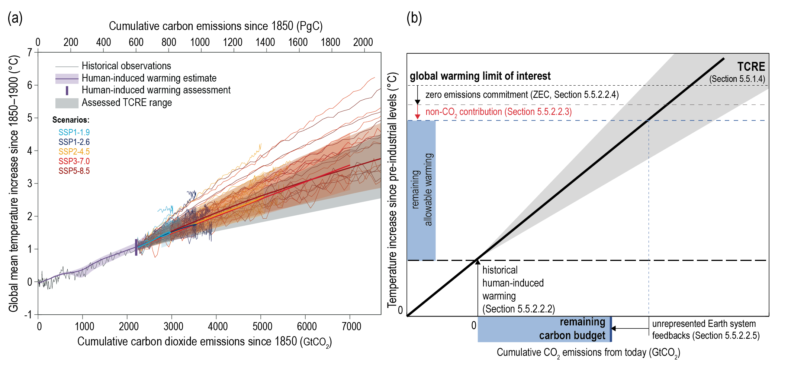

12 Terrestrial greenhouse gases
Author: Fabrice Lacroix
12.1 Atmospheric greenhouse gases and the Earth’s Energy Budget
Greenhouse gases are gases that absorb longwave radiation while letting shortwave radiation bypass, thus trapping heat within the atmosphere. The rise in concentration of such gases, such as CO2, CH4 and N2O, since the preindustrial time period has caused an energy surplus in the atmosphere and substantial warming of the climate (Figure 12.1). Understanding their sources and sinks, for which terrestrial sources and sinks play an important role, and how these are changing with climate and other anthropogenic change, is key to understand current and project future warming of the planet due to human activities.
12.2 Terrestrial sinks and sources of atmospheric greenhouse gases
Chapter 3 that increasing anthropogenic CO2 to the atmosphere, which are dominated by the direct burning of fossil fuel, are partly compensated by terrestrial and oceanic sinks. Despite this sink, land also has emissionpathways from natural systems as well as managed lands, which can be sources of CO2, CH4 and N2O to the atmosphere. Land use change, in particular, is known to be an important contributor of CO2 to the atmosphere since the preindustrial time period (Friedlingstein et al. (2025)). Thawing of permafrost, disturbances such as fire, as well as drainage of wetlands can cause substantial local sources of CO2 emissions to the atmosphere. Overall however, unmanaged and covered land areas are still an increasing sink globally of CO2 owing largely to the effect of CO2 fertilization, which dominates over sources.
Terrestrial systems are important for the budgets of the non-CO2 greenhouse gases CH4 and N2O, which are amongst the most potent radiative forcing agents (Figure 12.1), by providing important source terms to the atmosphere. Although atmospheric concentrations of CH4 and N2O are two to three orders of magnitude lower than concentrations of CO2 (factor 100-1000), their contribution to anthropogenic climate change, measured by their effective radiative forcing, in particular, is still significant due to their high global warming potential (see Section 12.8 below). Amongst them, methane (CH4) has the highest effective radiative forcing (ERF) since 1700 with 0.54 [0.43-0.65] W m-2, which is comparable in magnitude to the ERF of halogens and ozone. Nitrous oxide (N2O) also has a sizable contribution to anthropogenic climate change with an ERF of 0.21 [0.18-0.24] W m-2, amounting to roughly 10% of the ERF of CO2, which is 2.16 [1.90-2.41] W m-2. Both CH4 and N2O are emitted from a large number of natural and anthropogenic sources. It is however currently difficult to distinguish between unperturbed, natural fluxes from ecosystems, and emissions arising from the use and transformation of natural ecosystems for human activities.
12.3 Global CO2 Budget
As shown in the Global Carbon Budget (Chapter 3), the terrestrial sphere plays an important role in the global CO2 budget: The terrestrial Earth system component accounts for part of global emissions from land use change, but it has taken up around 21% of total emissions, absorbing atmospheric CO2. This sink is of similar magnitude to its counterpart: the ocean sink (Chapter 13). The terrestrial CO2 sink is thought to be majorly driven by the CO2-fertilization effect on the vegetation growth and carbon uptake based on model simulations (Friedlingstein et al. (2025)). This effect of CO2 fertilization may explain a large part of observed greening trends around the globe, and has been demonstrated in elevated CO2 experiments (Walker et al. (2015)), as well as tree ring records (Hubau et al. (2020)). Climate change-driven effects can have in turn different signs of change on the terrestrial sink. It largely acts towards reducing this sink, especially through the enhancement of soil emissions and decreased plant growth in the tropics (Friedlingstein et al. (2025)). However, in the high latitudes, warming is increasing terrestrial CO2 uptake by providing better (warmer) plant growth conditions, as well as longer growing seasons ((berner?)) More details on the global carbon budget and spatial CO2 patterns can be found in its dedicated Chapter Chapter 3.
12.4 Global Methane (CH4) Budget
Generally, methane is produced through fossil fuel burning, in wet soils and freshwaters, as well as through agricultural activities. Methane emissions arise from both natural processes (dark cyan in Figure 12.2), contributing to its atmospheric concentrations, but concentrations have been increasing due to enhanced emissions from human activities, as well as through human-caused warming. The atmosphere is a sink of methane primarily through tropospheric hydroxyl loss, and other minor tropospheric and stratospheric consumption processes (dark red in Figure 12.2). A certain amount of methane is also sequestered through its oxidation in soils.
The largest natural terrestrial sources of methane include emissions from wetlands, freshwater systems, and geological processes. For the former two, these sources of methane, which arise in conditions where oxygen levels are very low (anaerobic conditions), are thereby the residual of production of methane within the ecosystem and its oxidation within the soil or water column. As depicted in Figure 12.2, wetlands contribute 102-182 Tg CH4 yr-1, mainly through microbial production under anaerobic conditions. Methane emissions are particularly high in tropical wetlands, where red and warm conditions provide ideal production conditions. There are also substantial emissions arising in carbon-rich wetlands of higher latitudes. Further global emissions of methane arise from freshwater systems, particularly lakes with sediments rich in organic matter, which emit 117-212 Tg CH4 yr-1 via ebullition (bubble formation) and diffusion to the surface through the water column. Low latitude areas are also dominant for freshwater emissions due to warm conditions, while high latitude freshwaters can also account for globally-significant sources due to large carbon concentrations in the water. Terrestrial geological processes furthermore emit 18–65 Tg CH4 annually from the Earth’s crust through faults and fractured rocks and seeps. The ocean contributes a smaller share, with only 4–10 Tg CH4 yr-1, through biogenic, geological and hydrate emissions from coastal and open ocean, while termites, an insect infraorder, release around 9 Tg CH4 yr-1.
Changes in soil conditions (warming, soil moisture change), in freshwater temperatures, as well as warming of ocean waters and changes in circulation can affect methane production and oxygation, although these changes remain strongly uncertain at the global scale. Particularly, the thawing of permafrost and changes in wetland areas may be causing changes in CH4 emissions. Thawing of the permafrost, for instances, is exposing large amounts of organic carbon to degratation. Previously, this carbon had been immobilized for thausends of years at freezing temperatures. The potential release of CH4 following the thawing process may cause a positive (warming) climate feedback with future warming, that could have significant impacts on the global climate (see Chapter 9).

NoteSoil CH4 Emissions
CH4 emissions are produced by microbes (“methanogens”) under wet and anaerobic (low oxygen) conditions. This process takes place in completely saturated soils, or wetlands. Production follows the net equation:
CO2 + H2 -> CH4 + H2O
This CH4 can be oxidized within the soil (often in the shallow part of the soil), following the equation:
CH4 + O2 -> CO2 + 2H2

Direct anthropogenic sources of methane primarily arise from fossil fuel extraction and processing, livestock, waste management, and rice cultivation. Fossil fuel extraction is estimated to contribute 114–116 Tg CH4 yr-1, with significant emissions arising from countries such as China, the United States, and Russia, which are the leading producers of coal, oil, and gas, globally. Livestock, particularly ruminants, are the largest source linked to agricultural activities, emitting 106–115 Tg CH4 yr-1 through enteric fermentation and manure management in anaerobic conditions. Similarly, anaerobic decomposition occurs in landfills and during organic waste treatment, as well as in flooded rice paddies (25-37 Tg CH4 yr-1). Additionally, methane is released during incomplete combustion of organic material in biomass burning. Biomass burning contributes 22-39 Tg CH4 yr-1, with emissions coming from burning crop residues, savannah fires, forest fires, and stoves. However, distinguishing between natural and human-caused fires is complicated by a variety of factors, including weather conditions, vegetation types and land management practices.
12.5 Global nitrous oxide (N2O) budget and terrestrial sources
Current N2O sources to the atmosphere consist of natural terrestrial and oceanic sources, as well as a number of anthropogenic sources occuring from the burning of fossil fuel, production in sewage water, as well as in agricultural processes. Due to these anthropogenic sources, atmospheric concentrations of N2O have also experienced a substantial rise since the start of the industrial time period ((fig?)). The loss of N2O in the Earth system occurs through stratospheric oxydation.
Global natural sources of nitrous oxide (N2O) include soils covered by unmanaged vegetation, oxygen-deprived zones of the open ocean, as well as smaller contributions from inland water bodies and atmospheric chemistry (Figure 12.4). Terrestrial ecosystems produce N2O through microbial nitrification and incomplete denitrification, which both are redox processes occuring in soils. Nitrification, which uses NO3- as a substrate, occurs under oxic conditions, whereas N2O emissions occur under incomplete denitrification, which uses NO3- as an oxidant, under largely anoxic conditions. Natural sources of N2O thereby add up to 4.9-6.5 TgN yr-1 through microbial nitrification and denitrification, as shown in Figure 12.5.
Other than terrestrial sources, fossil fuel burning produces a source of 2.5-4.3 TgN yr^-1 to the atmosphere, while the open ocean emits 2.5-4.3 TgN yr-1, largely through nitrification in productive but oxygen-rich waters, and denitrification in subsurfacce oxygen minimum zones, as well as in coastal sediments.

Of the anthropogenic N2O emissions, agriculture is the most important source, contributing 2.5–5.8 TgN yr-1 due to the extensive use of synthetic fertilizers and manure on croplands and pastures, as well as from manure management and aquaculture. Fertilizers and manure enrich the soil nutrition for plants but also increase N2O emissions from soil inorganic nitrogen that is not absorbed by plants. A further -0.6-1.1 TgN yr-1 could be added to soils in natural ecosystems influenced by human perturbation of nitrogen deposition. Non-agricultural sectors also contribute to anthropogenic N2O emissions, particularly from industrial activities such as fossil fuel combustion and chemical processing (0.8-1.1 TgN yr-1), and wastewater treatment (0.2-0.5 TgN yr-1). Industrial N2O emissions, primarily from nitric and adipic acid production, have decreased in North America and Europe since the 1990s due to the adoption of abatement technologies. Additionally, inland water bodies, estuaries, and nitrogen deposition from atmospheric pollution contribute relatively small amounts of N2O. Biomass burning, including natural and anthropogenic fires, also contributes 0.5-0.8 TgN yr-1.
NoteSoil N2O Emissions
During the soil N cycle (see Chapter 11), N2O emissions can be produced during two distinct processes. Firstly, it can be produced during nitrification as a secondary product:
2NH3 + 2O2 -> NO3- + H+
Secondly, it is also a byproduct of denitrification, where nitrate (NO3) is used as an oxidant. This process takes place under wet and anaerobic (low oxygen) conditions:
NO3 -> N2O
This N2O can however also further react in the complete denitrification process, which can also cause a soil sink in N2O:
N2O -> N2

12.6 History of atmospheric concentrations of CH4 and N2O
CO2, CH4 and N2O concentrations have varied strongly over glacial-interglacial cycles, which are reconstructed from ice core concentrations. However they all have rapidly risen in the anthropocene, especially sharply since industrialisation, with both CH4 and N2O reaching concentrations far beyond levels ever recorded during the last 800,000 years.
During glacial periods, atmospheric CO2, CH4 concentrations typically ranged around 320 ppb and were thus substantially lower than during warm (interglacial) periods, when concentrations were around 700 ppb (Figure 12.6). Lower concentrations in glacial period owes to multiple reasons. While ice ages are initially driven by periodic orbital settings, which led to the Earth’s cooling, it also sets off re-enforcing feedbacks of reduced atmospheric concentrations which lead to further cooling. Firstly, a colder ocean stores more carbon as CO2. Colder temperatures and reduced wetland coverage further lead to the reduction of CH4 and N2O emissions from soils. Lastly, the increased formation of ice sheets reduces the planetary albedo, which further cools the climate.
In the the transitions between glacial and interglacial periods were typically characterised by a sharp increase in greenhouse gas concentrations, reflecting CO2 emissions from a warming ocean, as well as increases in natural CH4 and N2O sources, such as from soil warming, increasing wetlands and permafrost thawing. For instance, N2O concentrations varied between about 195 ppb during glacial periods and up to 290 ppb during interglacial periods. These variations in atmospheric N2O concentrations were related to varying sources from soils and marine emission changes in response to changes in ocean currents and oxygen availability (Joos and Spahni 2008). Also here, a reduction of ice sheet coverage reduced the planetary albedo, which further warmed the climate, leading to a warm period with high atmospheric greenhouse gas concentrations.

The last glacial maximum occurred around 20,000 years ago. Since then, both CH4 and N2O concentrations have increased first to typical interglacial levels during the pre-industrial Holocene (between around 11 kyr BP to 1700 CE), and then in a rapidly accelerated fashion to current levels of around 1800 ppb CH4 and around 330 ppb N2O. The growth rates during the industrial period are about 500 times faster than ever recorded during glacial-interglacial cycles. This underlines the significant contribution of anthropogenic activities since the Industrial Revolution. However, rapid changes in atmospheric concentrations occurred also during glacial periods, when CH4 and N2O varied rapidly over the course of (mainly northern-hemispheric) climate oscillations (Figure 1.3) associated with variations in the meridional overturning circulation (Arneth et al. 2010).
12.7 Atmospheric sinks of CH4 and N2O
As illustrated in Figure 12.2, methane is primarily removed from the atmosphere through chemical loss in the troposphere via oxidation by hydroxyl radicals (OH-) at 483-682 Tg CH4 yr-1. Other minor sinks for methane include soil uptake through bacterial oxidation, loss in the stratosphere via reactions with chlorine (Cl) and excited oxygen atoms (O(¹D)), and loss through tropospheric chlorine reactions. Therefore, the concentration of OH, particularly in the troposphere, is a dominant determinant of the rate of CH4 removal.
By contrast, as illustrated in Figure 12.4, nitrous oxide is removed in the stratosphere through two principal processes: photolysis, whereby N2O molecules are broken down by ultraviolet (UV) radiation, and oxidation by O(¹D) radicals, where reactive oxygen atoms oxidize N2O. Stratospheric factors, such as temperature and UV radiation levels, play a major role in N2O destruction. Warming could potentially accelerate stratospheric circulation, affecting the distribution and degradation of N2O. Furthermore, changes in stratospheric ozone concentrations can influence the rate at which N2O is broken down. In addition, the slight negative feedback of N2O lifetime to rising N2O levels results in a marginally shorter residence time.
Common to sink processes for both CH4 and N2O is that, to first order, the sink rates are proportional to the respective atmospheric concentration. The atmospheric concentration of, for example N2O, proportionally scales the number of N2O molecules exposed to oxidation. Secondary effects modify this rate, but conceiving the sink flux (descruction rate) to be proportional to concentration yields a good approximation.
12.8 Atmospheric lifetime of CH4 and N2O
Atmospheric processes are key sinks of both CH4 and N2O in the Earth system, largely compensating their present-day sources. These atmospheric sink processes for CH4 and N2O (Section 12.7), which are approximately proportional to their concentration, and their emission sources, determine the atmospheric mass balance of CH4 and N2O: \[ \frac{\mathrm{d}C(t)}{\mathrm{d}t} = E(t) - \frac{1}{\tau} C(t) \;. \tag{12.1}\]
\(C(t)\) is the atmospheric mass of either CH4 or N2O at time \(t\), and \(E(t)\) are the respective emissions. The proportionality constant \(\tau\) represents the atmospheric lifetime or turnover time (in years) of the greenhouse gas. See Section 3.2 for a more detailed introduction of the concept of the turnover time and the 1st-order decay model.
Methane (CH4) is a relatively short-lived GHG with an atmospheric lifetime (\(\tau\)) of about 11.8 ± 1.8 years (Table 12.1), while nitrous oxide (N2O) is considered a long-lived GHG, persisting in the atmosphere for around 109 ± 10 years (Forster et al. 2021). This means that methane has a shorter atmospheric residence time compared to the longer-residing N2O, allowing it to reach a steady state more quickly due to its higher rate of removal. In contrast, N2O may accumulate in the atmosphere over longer time scales, remaining for more than a century before it is removed. CO2 on the other hand, can have strongly differing atmospheric lifetimes. For one, emissions of CO2 can be rapidly taken up by land or ocean within a few years. The remaining CO2 in the atmosphere however has lifetime of centuries due to direct removal processes in the atmosphere.
NoteGlobal warming potential
Differences in atmospheric residence times of difference greenhouse gases has implication for their warming effects over time. Greenhouse gas effects are often measured relative to effects of carbon dioxide (CO2), thus in terms of kilograms of CO2 equivalent. This results in a dimensionless factor known as the Global Warming Potential (GWP). The GWP metric quantifies the cumulative warming effect (or radiative forcing) of the emission of 1 kilogram of a greenhouse gas compared to the emission of 1 kilogram of CO2 and considers its removal from the atmosphere over a specified time horizon, commonly 20 years (GWP20), 100 years (GWP100), or 500 years (GWP500). Thus, the GWP considers both the radiative efficiency of the GHG and its atmospheric lifetime.
It is important to note also that the GWP of the short-lived GHG CH4 is much at the 20-year time scale, than at longer time scales. This owed to the rapid decay of atmospheric CH4, while CO2 remains airborne for longer (a considerable fraction remains in the atmosphere for centuries). In contrast to CH4, N2O has a similar GWP at the 20 and 100 year time scale because its atmospheric concentration decline unfolds at a similar rate than that of CO2 over the first 100 years.
| Species | Lifetime (Years) | Radiative Efficiency (W m⁻² ppb⁻¹) | GWP-20 | GWP-100 | GWP-500 |
|---|---|---|---|---|---|
| CO2 | Multiple | 1.33 ± 0.16 ×10⁻⁵ | 1.0 | 1.0 | 1.0 |
| CH4-fossil | 11.8 ± 1.8 | 5.7 ± 1.4 ×10⁻⁴ | 82.5 ± 25.8 | 29.8 ± 11 | 10.0 ± 3.8 |
| CH4-non fossil | 11.8 ± 1.8 | 5.7 ± 1.4 ×10⁻⁴ | 79.7 ± 25.8 | 27.0 ± 11 | 7.2 ± 3.8 |
| N2O | 109 ± 10 | 2.8 ± 1.1 ×10⁻³ | 273 ± 118 | 273 ± 130 | 130 ± 64 |
| HFC-32 | 5.4 ± 1.1 | 1.1 ± 0.2 ×10⁻¹ | 2693 ± 842 | 771 ± 292 | 220 ± 87 |
| HFC-134a | 14.0 ± 2.8 | 1.67 ± 0.32 ×10⁻¹ | 4144 ± 1160 | 1526 ± 577 | 436 ± 173 |
| CFC-11 | 52.0 ± 10.4 | 2.91 ± 0.65 ×10⁻¹ | 8321 ± 2419 | 6226 ± 2297 | 2093 ± 865 |
| PFC-14 | 50,000 | 9.89 ± 0.19 ×10⁻² | 5301 ± 1395 | 7380 ± 2430 | 10,587 ± 3692 |
The emission-concentration relationships for CO2, CH4, and N2O differ significantly due to their different sources, atmospheric lifetimes, and the mechanisms by which atmospheric concentrations are reduced. CO2 has multiple lifetimes as it cycles between different pools. Once emitted, atmospheric CO2 is not actually removed (no chemical destruction), but is gradually redistributed among the different spheres in the Earth system - a process that takes hundreds to thousands of years. Critically, a portion of CO2 remains in the atmosphere at millennial time scales, leading to a continues buildup in atmospheric concentration over time unless emissions are reduced to zero. In contrast, CH4 has a shorter atmospheric lifetime of decades and is removed by chemical reactions in atmosphere. After a cessation of emissions, atmospheric CH4 concentrations decline exponentially towards zero. Analogously, when CH4 emissions are stabilised, concentrations are stabilised as well, while CO2 concentrations continue rising under positive non-zero emissions. The same dynamics as for CH4 apply to N2O, albeit (considering its longer atmospheric lifetime) with slower dynamics and response time scales of concentration changes in response to emission changes.
12.9 Future evolution of CO2, CH4 and N2O in future scenarios and the transient climate response to emissions
Rising atmospheric CO2 concentrations, climate change, increasing reactive nitrogen inputs (atmospheric deposition and N fertiliser applications on croplands) all will continue to contribute to changes in terrestrial emissions CH4 and N2O in future scenarios, according to the newest models. The CO2 fertilization effect on vegetation growth will likely persevere with further rising atmospheric CO2. As a consequence of warming, some models suggest that CO2, N2O and CH4 production from natural systems will increase in a high-emission scenario, but can be stabilized in scenarios with lower warmng (Stocker et al. 2013). Additionally, future inputs reactive N inputs from fertilizers application and atmospheric deposition could increase substrate availability for denitrification, leading to higher N2O emissions. However, climate change also alters soil moisture and oxygen availability, which is a control on both N2O and CH4 emissions from soils. Plant productivity enhancements under rising CO2 and climate change tend to deplete inorganic soil N pools and may thus reduce denitrification rates and N2O production. These net effects arising from multiple changing drivers are simulated differently by different models, thus leading to considerable uncertainty in future scenario projections (Zaehle et al. 2011; Stocker et al. 2013).
A concept that has arose to very simply estimate future warming based on future emission scenarios is that of the transient climate response to emissions Figure 12.7. In this framework, the warming observed and simulated by models (Y-axis) is compared to cumulative CO2 emissions on the X-axis. The figure shows an almost linear evolution of warming to cumulative CO2 emissions, with small deviations explained by non-CO2 greenhouse gas emissions, as well as changes in other forcing agents (aerosols, CFCs). While a saturation of the greenhouse gas sink in both ocean and land is likely increasingly in high emission scenarios - meaning that the ocean and land take up a declining fraction of emissions human produce - compensating feedbacks from the atmospheric heat budget is thought to largely compensate the decreasing efficiency in atmospheric CO2 removal. This is however still an area of ongoing research.

CautionExercise
- Projected fossil fuel emissions for the year 2025 were estimated to be 3.8 GtC yr-1, marking a new record value. According to fractions of uptake in @ref(sec-globalcarbonbudget), how much of these emissions remain in the atmosphere, and how much are taken up by land and ocean on a decadal timescale?
- Assume constant CH4 and N2O emissions of 610 MtCH4 yr-1 and 17 Mt N2O yr-1, as well as current atmospheric concentration of 1.94 ppm and 0.34. What is the concentration of both gases in the atmosphere after 20, 50, 100 years?
- The best estimate of the transient climate response to emissions is currently of around 1.5 °C / 1000 Gigatons CO2. Assuming scenarios of future emissions of 270 (SSP1-26), 750 (SSP2-45), 1438(SSP3-70)and 2103 (SSP5-85) of Gigatons C of CO2, warming would you expect in year 2100?
- Explain why the Global Warming Potential of greenhouse gases differ and change over time?
- Considering we need to severely reduce greenhouse gas emission to meet climate goals in year 2050. Which greenhouse gas would be most efficient to reduce, from an Earth system perspective only, and why?